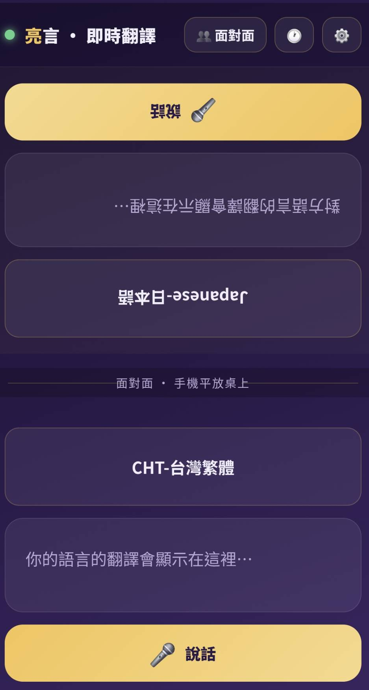

到上一章為止，你的 App 已經會：打字翻譯、語音翻譯、即時口譯。這些都是「你一個人拿著手機」在用。
但真實出國情境常常是——你和店員、路人面對面，你講中文、他講外文，兩個人要輪流看同一支手機。這一章就把這個場景做出來。
把手機平放桌上，畫面上下對開：對面的人看倒過來的上半、你看正的下半。各自講各自的語言，翻譯顯示在對方那一側——他就能正著讀你的話。
一個真正「面對面」的翻譯機：適合出國問路、店家溝通，一支手機兩個人用。
┌─────────────┐
│ 對面的人看 │ ← 上半，旋轉 180°（給對面的人正著看）
│ （翻轉的文字）│
├─────────────┤
│ 你看的 │ ← 下半，正常方向（給你看）
│（正常的文字）│
└─────────────┘
手機平放桌上，你在這邊、對方在那邊關鍵直覺：手機平放時，坐你對面的人是「上下顛倒」看螢幕的。所以上半整塊轉 180°，對他來說就變正的了。
translate()、Recognizer、speak() 直接重用。CSS 的一行指令，把一整塊畫面「轉半圈」。不是重寫程式，只是把已經排好的東西「掉頭」給對面的人看。
翻譯、語音辨識、朗讀在前面章節都做好了。面對面模式只是把它們「接兩份」——上一份、下一份，各接各的麥克風。
| 檔案 | 加什麼 |
|---|---|
| templates/index.html | 加一個 faceView 區塊（上下兩塊：語言選單＋結果框＋麥克風），頂部加「切換模式」鈕 |
| static/css/style.css | 把上半 .face-panel.top 用 transform: rotate(180deg) 翻過來 |
| static/js/app.js | 寫 makeFaceSide()（一邊的邏輯）呼叫兩次，再加模式切換 |
📂 打開這個檔案：templates/index.html，把這段貼在原本單人畫面（singleView）那個區塊的後面，先設成隱藏（hidden），等按了切換鈕才顯示。
💬 對你的 AI 助手這樣說（複製整段貼過去）：
幫我在 index.html 加一個「面對面模式」區塊 <section id="faceView">， 先隱藏。裡面分上、下兩塊 face-panel：上塊 id 用 top、下塊用 bottom。 每一塊都要有：語言選單、翻譯結果框、一顆麥克風「說話」按鈕。 上塊元素 id 用 f_langTop / f_resultTop / f_micTop， 下塊用 f_langBottom / f_resultBottom / f_micBottom。 中間放一條分隔線寫「面對面 · 手機平放桌上」。
<!-- ===== 面對面模式 ===== --> <section id="faceView" class="view hidden"> <!-- 上半：翻轉 180°，給對面的人看 --> <div class="face-panel top" id="face_top"> <div class="face-inner"> <select class="lang-select" id="f_langTop"></select> <div class="result-box face-result" id="f_resultTop"> <span class="placeholder">對方語言的翻譯會顯示在這裡…</span> </div> <button class="mic-btn face-mic" id="f_micTop"><span class="mic-ico">🎤</span> 說話</button> </div> </div> <div class="face-divider"><span>面對面 · 手機平放桌上</span></div> <!-- 下半：正常方向，給你看 --> <div class="face-panel bottom" id="face_bottom"> <div class="face-inner"> <select class="lang-select" id="f_langBottom"></select> <div class="result-box face-result" id="f_resultBottom"> <span class="placeholder">你的語言的翻譯會顯示在這裡…</span> </div> <button class="mic-btn face-mic" id="f_micBottom"><span class="mic-ico">🎤</span> 說話</button> </div> </div> </section>
| 這個元素 | 在做什麼 |
|---|---|
<section id="faceView" class="hidden"> | 整個面對面畫面的外框，先隱藏；按切換鈕才拿掉 hidden 顯示 |
.face-panel top / bottom | 上半、下半兩塊。等一下 CSS 只把 .top 翻過來 |
<select id="f_langTop"> | 上半的語言選單（對面的人選他的語言）；下半是 f_langBottom |
<div id="f_resultTop"> | 上半的結果框——下面講的話翻好後會顯示在這（重點！） |
<button id="f_micTop"> | 上半自己的麥克風。上下各一顆，互不干擾 |
.face-divider | 中間那條分隔線，提醒「手機平放桌上」 |
📂 打開這個檔案：static/css/style.css，把這段貼在檔案裡任何一個樣式區塊後面都可以。
💬 對 AI 這樣說：
幫我寫面對面模式的 CSS： faceView 用 flex 直向排列、上下兩塊平分高度。 每一塊 face-panel 裡面內容直向排列（選單、結果框、麥克風）。 最重要：把上半 .face-panel.top 用 transform: rotate(180deg) 翻過來， 讓坐我對面的人看是正的。
/* ---------- 面對面模式 ---------- */ #faceView { padding: 0; } .face-panel { flex: 1; display: flex; padding: 16px; overflow: hidden; } .face-panel.top { transform: rotate(180deg); /* ← 就是這一行：上半掉頭給對面看 */ background: rgba(245,196,81,0.04); } .face-inner { flex: 1; display: flex; flex-direction: column; gap: 12px; } .face-result { font-size: 1.4rem; } .face-mic { padding: 13px; font-size: .95rem; } .face-divider { display: flex; align-items: center; justify-content: center; padding: 6px 0; background: rgba(0,0,0,.2); }
💡 faceView 本身用 flex 直向排列（沿用畫面的 .view 樣式），所以 .face-panel 的 flex:1 會讓上下兩塊自動平分高度。
.face-panel { flex: 1 }：上下兩塊各佔一半高度，畫面剛好對開。
.face-panel.top { transform: rotate(180deg) }：只有上半整塊順時針轉半圈。文字、選單、按鈕全部跟著掉頭——對坐你對面、上下顛倒看螢幕的人來說，剛好變正的。
下半不轉，因為那是給你（拿手機這邊的人）看的，本來就正的。
rotate(180deg) 就把「對面視角」解決了。這是 CSS 最漂亮的小技巧之一。rotate(180deg) 是加在 .face-panel.top（只有上半那塊），不是加在 #faceView（整個外框）。makeFaceSide()——按麥克風→聽你講→翻成對面的語言→顯示在對面那一框並朗讀。上、下各呼叫一次就好。📂 打開這個檔案：static/js/app.js，把它貼在檔案裡「模式切換」那段的前面（也就是即時口譯相關函式的後面）。
💬 對 AI 這樣說：
幫我寫 makeFaceSide(langSelId, resultBoxId, micBtnId, getTargetId)： 用現成的 Recognizer 監聽這一塊的麥克風按鈕； 講完停止後，把整段用 translate() 翻成對面的語言， 顯示在「對面那一塊」的結果框，再用 speak() 朗讀出來。 然後呼叫兩次：下塊 f_micBottom 翻到上塊、上塊 f_micTop 翻到下塊。
// ===== 面對面模式 ===== function makeFaceSide(langSelId, resultBoxId, micBtnId, getTargetId) { const box = $(resultBoxId), btn = $(micBtnId); const rec = new Recognizer({ bcp: byId($(langSelId).value).bcp, onInterim: (t) => setResult(box, t, true), // 邊講邊顯示（暫時的） onDone: async (t) => { const src = $(langSelId).value, tgt = getTargetId(); try { const out = await translate(t, src, tgt); // 顯示在「對面那一側」的框 const otherBox = (resultBoxId === 'f_resultBottom') ? $('f_resultTop') : $('f_resultBottom'); setResult(otherBox, out); speak(out, byId(tgt).bcp); // 念出來給對面聽 pushHistory(t, out); } catch (e) { toast(e.message); } }, onState: (on) => btn.classList.toggle('listening', on), }); btn.addEventListener('click', () => { rec.bcp = byId($(langSelId).value).bcp; rec.start(); }); return rec; } // 下方(你)講 → 翻成上方語言 → 顯示在上方(翻轉給對面看) makeFaceSide('f_langBottom', 'f_resultBottom', 'f_micBottom', () => $('f_langTop').value); // 上方(對面)講 → 翻成下方語言 → 顯示在下方(給你看) makeFaceSide('f_langTop', 'f_resultTop', 'f_micTop', () => $('f_langBottom').value);
| 這幾行 | 在做什麼 |
|---|---|
new Recognizer({...}) | 沿用前面章節的語音辨識器，bcp 是這塊選的語言的辨識代碼 |
onInterim → setResult(box, t, true) | 你還在講的時候，把「暫時的字」先顯示在自己這塊，有回饋感 |
onDone: async (t) | 你講完按停後才進來，拿到整段話 t |
translate(t, src, tgt) | 把整段翻成對面的語言（getTargetId() 取的是對面選單的值） |
otherBox = ... ? f_resultTop : f_resultBottom | 本章靈魂：翻好的字塞進「對面那一框」，不是自己這框 |
speak(out, byId(tgt).bcp) | 用對面語言的發音把翻譯念出來 |
直覺上你會以為「翻譯結果顯示在我這邊」。但面對面情境剛好相反——
otherBox：講話的是這一塊，結果卻寫到「另一塊」。這一個小反轉，就是面對面模式能運作的關鍵。onInterim 把「你正在講的暫時字」顯示在自己這塊，翻好的成品送到對面——講者和聽者各看各的，不會打架。makeFaceSide() 把「一邊的完整行為」包成一個函式，只要告訴它四件事：用哪個語言選單、聽哪顆麥克風、結果框是哪個、對面語言去哪拿。
於是上下兩邊只差參數不同，同一段程式呼叫兩次就完成：
| 呼叫 | 誰講 | 翻到哪 |
|---|---|---|
| 第一次（bottom） | 你（下半） | 上半，給對面 |
| 第二次（top） | 對面（上半） | 下半，給你 |
📂 打開這個檔案：先在 templates/index.html 頂部工具列放一顆 id="modeBtn" 的按鈕；切換邏輯寫在 static/js/app.js，接在 makeFaceSide 那段後面。
<!-- index.html 頂部工具列 -->
<button class="icon-btn" id="modeBtn" title="切換模式">👤 單人</button>// ===== 模式切換 ===== let mode = 'single'; $('modeBtn').addEventListener('click', () => { if (liveOn) stopLive(); // 若還在即時口譯，先停掉 mode = mode === 'single' ? 'face' : 'single'; // 兩種模式來回切 $('singleView').classList.toggle('hidden', mode !== 'single'); $('faceView').classList.toggle('hidden', mode !== 'face'); $('modeBtn').textContent = mode === 'single' ? '👤 單人' : '👥 面對面'; });
💡 liveOn / stopLive() 是 CH09 即時口譯留下的東西——切模式前先把它停掉，避免麥克風還開著跑到別的畫面。
| 這幾行 | 在做什麼 |
|---|---|
let mode = 'single' | 記住現在是哪個模式，開機預設「單人」 |
mode = mode === 'single' ? 'face' : 'single' | 按一下就在兩個模式之間對調 |
singleView.classList.toggle('hidden', ...) | 不是單人模式就把單人畫面藏起來 |
faceView.classList.toggle('hidden', ...) | 不是面對面模式就把面對面畫面藏起來 |
modeBtn.textContent = ... | 按鈕文字也跟著換，讓你知道現在在哪個模式 |
hidden 決定「誰現身、誰躲起來」。切換不是重載頁面，所以又快又順。Ctrl + C 停掉、再 python app.py 重啟。切到面對面模式，手機平放桌上。你在下半按麥克風講中文、講完按停 → 上半出現英文（且是翻轉的，對面的人看是正的）並念出來。對面按上半麥克風講英文 → 下半出現中文。

rotate(180deg) 要加在 .face-panel.top（只有上半那塊），別加在 #faceView 整個外框。otherBox 那段判斷寫反了。下半講→寫到 f_resultTop，上半講→寫到 f_resultBottom。id="modeBtn"、兩個畫面 id 是 singleView 與 faceView，且都存在。.face-panel.top { transform: rotate(180deg) } 暫時改成 rotate(0deg)，重整頁面，坐對面試讀——體會「為什麼一定要翻」。f_langTop 改成日文，找個朋友當「日本店員」對講，看中↔日互翻。.face-result { font-size: 1.4rem } 調大到 2rem，隔著桌子看更清楚——體會「面對面要字大」的體驗設計。faceView，上下兩塊各有選單、結果框、麥克風。rotate(180deg) 把上半翻轉，對面的人看是正的。makeFaceSide() 寫一次、呼叫兩次；各側講話翻到對側顯示並朗讀。modeBtn 在單人／面對面模式間切換。打字翻、語音翻、即時口譯、面對面對話。核心翻譯功能全到齊！接著 Part 3 加上拍照、檔案、匯率、天氣、旅遊助手，讓它變成真正的旅遊神器。
進入 Part 3！下一章做拍照翻譯：對著菜單、看板拍一張，Gemini 幫你看懂、摘要、翻譯。會用到「多模態」——AI 同時理解圖片與文字。
本課程與專案僅供阿亮老師課程學員學習使用，禁止修改、轉傳、散布或商業使用。